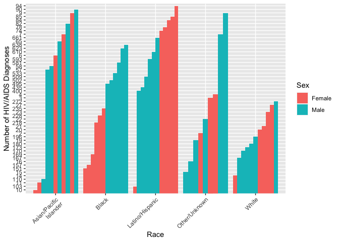
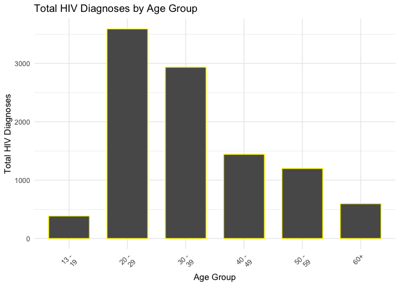
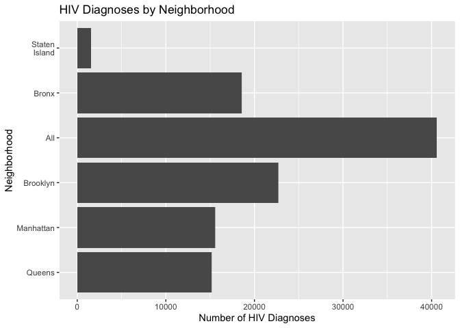
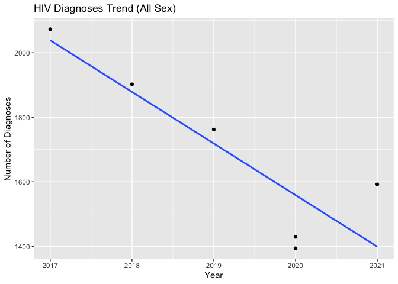

Jake W. Coldiron,Zixuan Qiu,Tianyuan Deng,Aung Nay Win,Yuqi Cheng
Date: 2023-11-10
library(tidyverse)
library(rvest)
library(httr)
library(plotly)#input the New York HIV data from NYC opendata
nyc_HIV1=
GET("https://data.cityofnewyork.us/resource/ykvb-493p.csv",
query = list("$limit" = 10000)) |>
content("parsed")|>
filter(year >= 2017)## Warning: One or more parsing issues, call `problems()` on your data frame for
## details, e.g.:
## dat <- vroom(...)
## problems(dat)nyc_HIV2=
GET("https://data.cityofnewyork.us/resource/dxnu-p2qd.csv",
query = list("$limit" = 22000)) |>
content("parsed")|>
filter(year >= 2017)#HIV service resource
HIV_service=
GET("https://data.cityofnewyork.us/resource/pwts-g83w.csv",
query = list("$limit" = 1000)) |>
content("parsed")|>
select(unique_id,facilityname,service_type, address,borough,state,zipcode,latitude,longitude)A short clear description of where and how data were obtained. explain the variables means in the data Calculate the sum, mean, median, standard deviation of HIV/AIDS indicators
Shows the number of HIV/AIDS diagnoses by race, sex, and age group.
#work
#work
colnames(nyc_HIV1)## [1] "year" "borough"
## [3] "neighborhood" "sex"
## [5] "race" "hiv_diagnoses_num"
## [7] "hiv_diagnoses_num_per_100k" "hiv_aids_concurrent_num"
## [9] "concurrent_hiv_aids_among_all" "aids_diagnoses_num"
## [11] "aids_diagnoses_num_per_100k"colnames(nyc_HIV2)## [1] "year" "neighborhood"
## [3] "race" "age"
## [5] "hiv_diagnoses_num" "hiv_diagnoses_num_per_100k"
## [7] "hiv_aids_concurrent_num" "concurrent_hiv_aids_among_all"
## [9] "aids_diagnoses_num" "aids_diagnoses_num_per_100k"
## [11] "borough"head(nyc_HIV1)## # A tibble: 6 × 11
## year borough neighborhood sex race hiv_diagnoses_num
## <dbl> <chr> <chr> <chr> <chr> <chr>
## 1 2021 All All All "All" 1592
## 2 2021 All All Female "All" 286
## 3 2021 All All Male "All" 1306
## 4 2021 All All All "Asian/Pacific\nIslander" 91
## 5 2021 All All Female "Asian/Pacific\nIslander" 9
## 6 2021 All All Male "Asian/Pacific\nIslander" 82
## # ℹ 5 more variables: hiv_diagnoses_num_per_100k <chr>,
## # hiv_aids_concurrent_num <dbl>, concurrent_hiv_aids_among_all <dbl>,
## # aids_diagnoses_num <dbl>, aids_diagnoses_num_per_100k <dbl>library(ggplot2)
All <- nyc_HIV1 %>%
filter(sex == "All" & race == "All" & borough == "All")
Female <- nyc_HIV1 %>%
filter(sex == "Female" & borough == "All" & race !="All")
Male <- nyc_HIV1 %>%
filter(sex == "Male" & borough == "All" & race !="All")
graph1 = bind_rows(Female, Male)
nyc_HIV1$hiv_diagnoses_num <- as.integer(nyc_HIV1$hiv_diagnoses_num)
nyc_HIV2$hiv_diagnoses_num <- as.integer(nyc_HIV2$hiv_diagnoses_num)
ggplot(graph1, aes(x=race, y=hiv_diagnoses_num, fill=sex)) +
geom_bar(stat="identity", position=position_dodge()) +
theme(axis.text.x = element_text(angle = 45, hjust = 1)) +
labs(x = "Race", y = "Number of HIV/AIDS Diagnoses", fill = "Sex")
# Graph Age
age_summary <- nyc_HIV2 %>%
filter(age != "All" & race == "All" & borough == "All") %>%
group_by(age) %>%
summarise(total_hiv_diagnoses = sum(hiv_diagnoses_num))
ggplot(age_summary, aes(x = age, y = total_hiv_diagnoses)) +
geom_bar(stat = "identity", color = "yellow", width = 0.7) +
labs(title = "Total HIV Diagnoses by Age Group",
x = "Age Group",
y = "Total HIV Diagnoses") +
theme_minimal() +
theme(axis.text.x = element_text(angle = 45, hjust = 1)) summary:
Show the map of NYC HIV service resources location.
if (!require(leaflet)) install.packages('leaflet')
library(leaflet)
filtered_data = HIV_service[HIV_service$longitude != 0 & HIV_service$latitude != 0,]
# Create the map
m <- leaflet(filtered_data) %>%
addProviderTiles(providers$OpenStreetMap) %>%
addCircleMarkers(
~longitude, ~latitude,
radius = 4,
popup = ~paste("<strong>Facility Name:</strong>", facilityname,
"<br><strong>Service Type:</strong>", service_type,
"<br><strong>Address:</strong>", address,
"<br><strong>Borough:</strong>", borough,
"<br><strong>Zip:</strong>", zipcode)
)
# Print the map
print(m)summary:
Show the distribution of the HIV/AIDS diagnoses by neighborhood.
#work
# I'll see if I can find the log&lat for the neighborhoods
diagnoses <- nyc_HIV1 %>%
select(borough, hiv_diagnoses_num)
# Plot bar chart
ggplot(diagnoses, aes(x = reorder(borough, hiv_diagnoses_num), y = hiv_diagnoses_num)) +
geom_col() +
labs(x = "Neighborhood",
y = "Number of HIV Diagnoses",
title = "HIV Diagnoses by Neighborhood") +
coord_flip()## Warning: Removed 5 rows containing missing values (`position_stack()`). summary:
Trend analysis:analyze the trend of the number of HIV/AIDS diagnoses over time.
#work
#work
All <- nyc_HIV1 %>%
filter(sex == "All" & race == "All" & borough == "All")
# Plot diagnoses over time
ggplot(All, aes(x = year, y = hiv_diagnoses_num)) +
geom_point() +
geom_smooth(method = "lm", se = FALSE) +
labs(
title = "HIV Diagnoses Trend (All Sex)",
x = "Year",
y = "Number of Diagnoses"
)## `geom_smooth()` using formula = 'y ~ x' summary:
Correlation analysis:After the Visualizations is there any association between different variables such as neighborhood, age, gender, and race.
#workT-test /ANOVA: Compare differences in HIV between two or more groups ( gender or racial). Chi-square test: Analyze associations between categorical variables (gender, race).